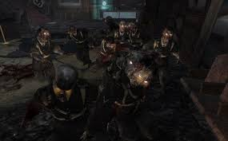
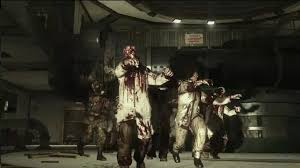

Kino Der Toten


Kino der Toten (Teatro de los Muertos en español) es un mapa zombi perteneciente a Call of Duty: Black Ops. Se trata de un teatro nazi abandonado en 1968. En este nuevo mapa aparecen las armas de la Guerra Fría del Black Ops, no como en el Call of Duty: World at War aunque se trate de los nazis. En este mapa se descubren los avances del Grupo 935 y la habitación de Samantha. Es el único mapa junto con Cinco en el cual la caja misteriosa aparece aleatoriamente; además, el teletransportador debe ser reiniciado cada vez que se utilice.
Nacht Der Untoten
Nacht der Untoten (en alemán: "la noche de los muertos vivientes") es el primer mapa del modo zombis. Es el primer mapa en ser desbloqueado en Call of Duty: World at War y en general del modo de Zombies. Fue lanzado en la Edición Endurecida y la Edición de Prestigio de Call of Duty: Black Ops, así como en el pack de mapas Rezurrection el 23 de agosto de 2011. Una estructura semejante a la de la construcción en Nacht der Untoten se puede encontrar en Green Run. Cronológicamente, es el tercer mapa zombi, tras Origins. Fue remasterizado por segunda vez en Call of Duty Black Ops III siendo el mapa con más apariciones en los juegos de Treyarch en el paquete de mapas de Zombies Chronicles.
| |
Ascension

Ascension es el octavo mapa de Zombies en general y está disponible en Call of Duty: Black Ops y Call of Duty: Black Ops III. Lanzado por primera vez en el paquete de mapas First Strike para Call of Duty: Black Ops, el mapa tiene lugar en un cosmódromo soviético abandonado en la Unión Soviética. El mapa presenta algunos componentes nuevos del modo Zombies, incluidos Space Monkeys, que reemplazan a Hellhounds de los mapas anteriores, y la primera búsqueda de huevos de Pascua.
Una versión remasterizada del mapa está disponible en el paquete de mapas de Zombies Chronicles para Call of Duty: Black Ops III, junto con otros siete mapas clásicos. |
Der Riese
Der Riese (alemán para El Gigante), es el cuarto y último mapa en el modo de juego Nazi Zombies en Call of Duty: World at War. Está situado en un centro secreto nazi de la Baja Silesia, cerca de Breslau, Alemania (ahora Wroclaw en Polonia), y fue el debut de los teletransportadores y la Maquina de Pack-A-Punch, una máquina que para 5000 puntos permite a los jugadores actualizar su arma. Fue lanzado en el pack de mapas 3, junto con tres mapas multijugador. El pack de mapas fue lanzado el 6 de agosto de 2009. Luego fue puesto en libertad el iOS 30 de septiembre 2010.
Luego fue puesto en libertad junto con Nacht der Untoten, Verrückt y Shi No Numa como parte del Prestige y la edición Hardened de Call of Duty: Black Ops, el 9 de noviembre de 2010. Más tarde fue lanzado en el pack de mapas Rezurrection.
|
Verruckt
Verrückt (Traducido: El manicomio ), es uno de los mapas disponibles en el primer paquete de mapas de Call of Duty: World at War, así como las ediciones "Endurecida" y "Prestigio" de Call of Duty: Black Ops y en el paquete de mapas Rezurrection. Tiene lugar en el Sanatorio Wittenau, ubicado en Berlín, Alemania. |
Moon
Moon es el undécimo y último mapa de Zombies incluido en Call of Duty: Black Ops en el paquete de mapas de Rezurrection. Fue lanzado el 23 de agosto para Xbox 360 y el 22 de septiembre para PS3 y PC. Los personajes de Ultimis, Dempsey, Nikolai, Takeo y Richtofen, una vez más regresan. Moon es el mapa de Zombies más grande de Call of Duty: Black Ops, y el tercer mapa de zombies más grande en términos de área jugable después de Green Run y ??Origins. |
|
|